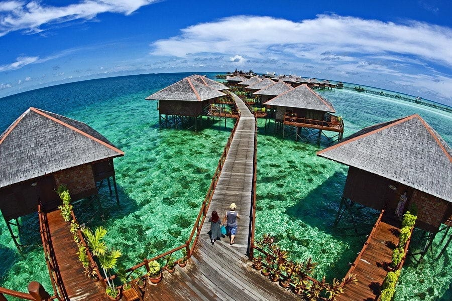

Pulau Mabul, or Mabul Island, is a small island located off the southeastern coast of Sabah,
Malaysia, in the Celebes Sea. Just a 15-minute boat ride from the world-renowned diving spot
Pulau Sipadan, Mabul is often considered a hidden gem in its own right. Though modest in
size, this tropical island is bursting with natural beauty, making it a favorite destination
for divers, nature lovers, and travelers seeking tranquility.
Mabul is best known for its stunning underwater biodiversity. The surrounding waters are
teeming with exotic marine life, especially macro species such as frogfish, pipefish,
cuttlefish, blue-ringed octopuses, and various types of nudibranchs. These qualities make
Mabul one of the top destinations in the world for muck diving—a type of diving that focuses
on the tiny and unusual creatures found in sandy or muddy seafloors.

One of the most well-known legends tells the story of a Chinese princess who waited
faithfully for her lover,
a local warrior, to return from a sea voyage. Unfortunately, he never came back. The
princess waited atop the
mountain until her death, and her spirit is said to still dwell on the mountain. This
romantic and tragic
tale adds a mystical element to Mount Kinabalu.
For the Kadazan-Dusun people, Mount Kinabalu is considered sacred. Every year, before major
climbing expeditions,
a ritual known as monolob is performed by a bobolian (a traditional priest or shaman). This
ceremony involves the
sacrifice of a chicken and prayers in an ancient dialect, seeking permission and protection
from the mountain spirits.